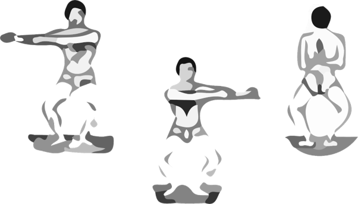
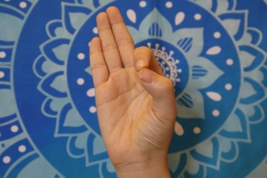

知識式、理念式、凝視第三眼身印、意識手印
這些動作可以加強我們的心智元素，刺激第三眼(眉心輪)，幫助我們增強智慧、慈悲的特質
知識式練習方法：
知識式初開始練習時，大部分的人都是做不起來的，可以一階段一階段的練習
一、 先鍛鍊困難椅式，除了鍛鍊我們大腦，也讓腿部準備好，來鍛鍊更困難的知識式
二、 等腳步有力時，練習半知識式：一腳盤在另一腳的腿上，兩手著地，或一手扶著牆壁練習知識式
三、 等到都準備好時就可以開始練習知識式了
蹲坐在左後腳跟，兩手垂放在臀部後面一點，然後將右腳踝置左大腿近膝蓋處，形成一與地面平行的三角形，左臂向上伸直並貼近耳朵，雙目向前平視。右手手指碰地以使身體保持平衡，維持此姿勢半分鐘。換腳重複上述動作。左右各四次。
這裡建議男生可以把會陰坐在腳後跟上，女性是把屁股坐在腳後跟上。練習時，意念集中前方一點，這種結合集中瑜伽的練習，會讓內心寧靜、集中、充滿力量。
知識式這個動作，藉由腳趾腹跟腳趾間壓在地板，全身力量透過屁股坐在腳後跟對指頭施壓，刺激上六個腺體，讓高層賀爾蒙分泌來幫助心智的開展，一手指地一手指天，導引意識、能量與靈能往高階脈輪提升，藉由這幾樣刺激導引組合，幫助不同知識層次的次第發展。
四、 每個回合的舒緩動作
知識式的瑜伽動作，是非常好大腦運動，也可以像高士基舞一樣活化上六個腺體，產生高階賀爾蒙，而創造出內心正性的波流。它更可以幫助內心寧靜、集中，強大心靈力量。一陣子練習知識式之後，你會發現你的靜坐居然神奇地進步了。
理念式練習方法
1. 以簡單椅式站著，兩腳稍微分開，讓雙腳成180度，腳趾相背，雙掌合十置於胸前，視線集中在眉心部分。自由呼吸停留八秒。
2. 吐氣時，兩手臂伸向右側伸，左手臂觸到胸部病盡量向右伸。自由呼吸停留八秒。
3. 慢慢吸氣，兩手臂慢慢還原，雙掌合十置於胸前，然後，兩手臂以同樣的方式向左伸。自由呼吸停留八秒。
4. 慢慢吸氣，兩手臂慢慢還原，雙掌合十置於胸前。然後讓雙手合掌於背後（天鵝手印），指尖朝上，自由呼吸停留八秒。這樣算一回，一共練習四回。
練習理念式時，手部的手印與身印動作，將能調整心智器官，讓心智器官穩定地收攝作用。練習時，注意力集中在眉心第三眼上，在下面脈輪的情緒與心念波流，將會順暢通過調整過的心智器官，而轉化為理念波流(Bhava)，最終流向第三眼，轉化為智慧的狀態。
功效：
1. 強化海底輪，增強下盤穩定度，改善身體循環，幫助能量的提昇
2. 增強身心的平衡力、穩定度、收攝力與集中力
3. 加強對神經系統的控制力
4. 幫助能量的精細化，加強能量轉換機轉，促使身體能轉換成心智能量
5. 強化心靈的調適與平衡能力
6. 幫助兩臂至胸部氣脈的通暢
7. 訓練心不為外物所動的定力，增強理念堅定感與理念實踐力
8. 調整心智器官，讓心智器官穩定地收攝作用。增強覺知力與第六感
9. 強化眉心輪，增加心靈的流動與統一，幫助智慧與慈悲心的開展
10. 有益於禪定
意識手印Chin Mudra或稱智慧手印 (Gyan mudra)
在手印的科學中，五根手指頭可以對應到下五個脈輪。小指對應海底輪；無名指對應生殖輪；中指對應臍輪；食指對應心輪；大拇指對應喉輪。其中心輪12種心靈情緒傾向中的自我感或我執感的波動，很容易流向食指，我們可以觀察，許多人在演講中或指責別人，自我感高張時，很喜歡用食指來指責別人或表達自我的狀態。所以瑜伽修行建議，要常常彎曲食指來加強控制自我熾盛的狀態。而大拇指對應到喉輪，代表貢高我慢之心，所以彎曲大拇指，可以控制貢高我慢之心，而加強喉輪的16種心靈情緒傾向中臣服謙卑之心。彎曲的食指尖與大拇指尖可以結在一起，同時伸直其他三根手指頭，代表勇往前進，整個手印產生的心靈波動是控制自我感與貢高我慢，讓生命永遠的奮發前進，這就是意識手印Chin Mudra。以靈性修持的角度來說，自我感與貢高我慢心是靈性成長之路最大的妨礙，所以我們可以時常結著意識手印來控制轉化它，也可以教導家裡小孩，想要用食指指東西或別人時，結著意識手印來轉化自我與固執心。
意識手印練習方法：
以蓮花座、完美坐姿或舒適的姿勢坐好。兩手結著意識手印，手心朝上，放在兩膝之上。閉起眼睛，意念集中在第三眼之上，感受著光明智慧充滿著第三眼。配合著自由呼吸。每回練習5到15分鐘。每日早、晚可以各做一回。
功效：
1. 幫助意識的提升與智慧的開展。
2. 改善心靈壓力和失序的狀態。
3. 有增強記憶力和集中力的效果。
4. 能淨化心靈，讓我們在任何情況之下皆能保持頭腦的清晰。
5. 對失眠、容易打瞌睡、憂鬱症和高血壓有益。